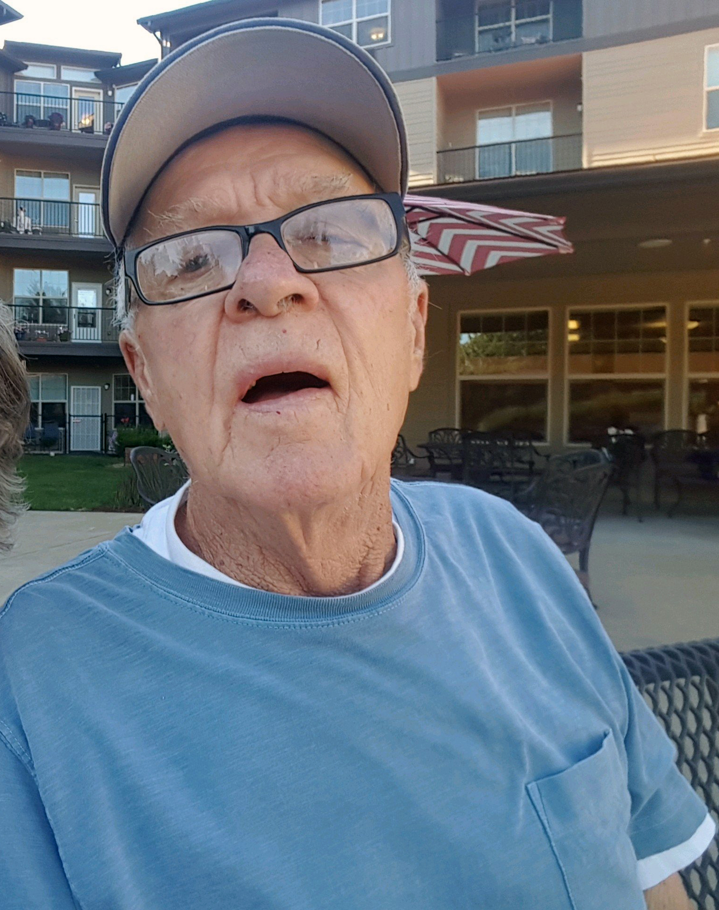

<%= t.renderMarkdown(archieml.text2.section1) %>
<%= t.renderMarkdown(archieml.text2.section2) %>
TIMES WATCHDOG
Public Crisis, Private Toll:
Read the full investigation

<%= t.renderMarkdown(archieml.text2.section3) %>


“That seems like a big, big red flag.” - Jim Vollendroff, former director of King County Behavioral Health and Recovery Division
<%= t.renderMarkdown(archieml.text2.section4) %>
<%= t.renderMarkdown(archieml.text2.section5) %>
<%= t.include("_bubbleChart.html") %>
<%= t.include("_bubbleChartMobile.html") %>
<%= t.renderMarkdown(archieml.text2.section6) %>
“Our role in this structure is to really work with the facility to help them be successful in doing their job better.” - Nate Weed, director of the state Department of Health’s Office of Community Health Systems
<%= t.renderMarkdown(archieml.text2.section7) %>
<%= t.include("_inspection-map.html") %>
<%= t.renderMarkdown(archieml.text2.section8) %>

<%= t.renderMarkdown(archieml.text2.section9) %>

Eric Descalso holds his daughter Danielle in a family photo. (Courtesy of the Descalso family)
<%= t.renderMarkdown(archieml.text2.section10) %>
The acquisition “is absolutely going to be a gem for us,” Acadia’s president told financial analysts the following spring.
<%= t.renderMarkdown(archieml.text2.section11) %>
<%= t.renderMarkdown(archieml.text2.section12) %>

Cascade Behavioral Health Hospital in Tukwila was known as Riverton Hospital until it was sold to Acadia Healthcare in 2013. It offers treatment for psychiatric and addiction disorders. (Erika Schultz / The Seattle Times)
<%= t.renderMarkdown(archieml.text2.section13) %>
Police officers were responding to Cascade Behavioral so often that in October of 2016, Tukwila’s police chief designated it a “chronic nuisance property.”
<%= t.renderMarkdown(archieml.text2.section14) %>
You can support watchdog journalism
Make a tax-deductible donation to The Seattle Times Investigative Journalism Fund, and subscribe to The Seattle Times.
<%= t.renderMarkdown(archieml.text2.section15) %>
<%= t.renderMarkdown(archieml.text2.section16) %>
<%= t.include("_prerollVideo.html", { file: "codi_titlecard.mp4", id: "6068745312001", runtime: "3:22" }) %>
Codi Branson reflects on her ex-husband’s last days. “I thought he was more cared-for in that setting, that it was a hospital.” (Erika Schultz, Gabriel Campanario & Lauren Frohne / The Seattle Times)
<%= t.renderMarkdown(archieml.text2.section17) %>
“I’ve got grandkids now and I’d like to see them grow up,” he told hospital staff. “I’m here to quit and get healthy.”
<%= t.renderMarkdown(archieml.text2.section18) %>

When her former husband needed treatment for alcoholism, Codi Branson felt confident that Cascade Behavioral Hospital in Tukwila would be a good fit. He died three days after checking in. (Erika Schultz / The Seattle Times)
<%= t.renderMarkdown(archieml.text2.section19) %>
<%= t.renderMarkdown(archieml.text2.section20) %>

Danielle Descalso and her dad, Eric Descalso, "were best friends," says her mother, Codi Branson. (Courtesy of the Descalso family)
<%= t.renderMarkdown(archieml.text2.section21) %>
<%= t.renderMarkdown(archieml.text2.section22) %>
<%= t.include("_facility-map.html") %>
<%= t.renderMarkdown(archieml.text2.section23) %>
<%= t.renderMarkdown(archieml.text2.section24) %>
Three assaults at BHC Fairfax Hospital in Kirkland
Oct. 31, 2017: The victim was taken to Evergreen Medical Center for his injuries. The assailant was charged with misdemeanor assault.
Oct. 17, 2018: The victim lost a front tooth and suffered an apparent broken nose. The assailant was arrested and the case was sent to the prosecutor.
Dec. 27, 2018: The staff member, who had just been punched in the face, was then bitten on the hand. Police referred the assailant for prosecution.
<%= t.renderMarkdown(archieml.text2.section25) %>
<%= t.renderMarkdown(archieml.text2.section26) %>

Jim Howell, 66, fell into depression after a shoulder injury. For days, he talked about his hopelessness, and took his own life about two weeks after arriving at Cascade Behavior Hospital. (Courtesy of Bonnie Jaeger)
<%= t.renderMarkdown(archieml.text2.section27) %>
That night, hospital staff made a note of Howell’s status every 15 minutes, as they had since his arrival. The record shows he was in bed all morning until 5:30 a.m., which is then crossed out with a large “X.”
<%= t.renderMarkdown(archieml.text2.section28) %>
“Cascade respectfully refutes as inaccurate any allegation that staff were not properly trained to respond to this unfortunate incident.” - Michael Uradnik, CEO of Cascade’s Behavioral Hospital
<%= t.renderMarkdown(archieml.text2.section29) %>
<%= t.renderMarkdown(archieml.text2.section30) %>
<%= t.renderMarkdown(archieml.text2.section31) %>
Tukwila police and fire responded to a reported assault at Cascade Behavioral but, upon arrival, “a nurse came out and said there was no assault and sent them on their way.”
<%= t.renderMarkdown(archieml.text2.section32) %>
<%= t.renderMarkdown(archieml.text2.section33) %>

Cascade staff told Carolyn Tomich's daughter she'd had a "non-injury fall" and suggested taking her mother to see a doctor. Tomich had broken her hip, and the fracture contributed to her death a few weeks later. (Courtesy of Tracee Tomich)

Kenneth Turner, 82, fell four times at Cascade. “If they had been walking with him, or taking care of him like they’re supposed to, how did he fall four times?” said Barbara Turner, his wife of 62 years. (Courtesy of Judy Russo)

Jim Mason's family never learned from Cascade how the 92-year-old fell. He died of a hemorrhage and "blunt force injuries to the head" in May 2018. (Courtesy of Tim Johnson)
<%= t.renderMarkdown(archieml.text2.section34) %>
<%= t.renderMarkdown(archieml.text2.section35) %>
“They were the most attentive, caring, compassionate people. She was more at peace, more happy there than anytime in the last 15 years.” - Don Kay, husband of Marilyn Ham-Kay
<%= t.renderMarkdown(archieml.text2.section36) %>
- Reporter: Daniel Gilbert
- Project editor: Ray Rivera
- Photographer: Erika Schultz
- Photo editor: Fred Nelson
- Video editor: Lauren Frohne
- Developer and graphic artist: Emily M. Eng
- Illustrator: Gabriel Campanario
- Engagement: Taylor Blatchford
- Project coordinator: Laura Gordon
CREDITS
You can support watchdog journalism
Make a tax-deductible donation to The Seattle Times Investigative Journalism Fund, and subscribe to The Seattle Times.